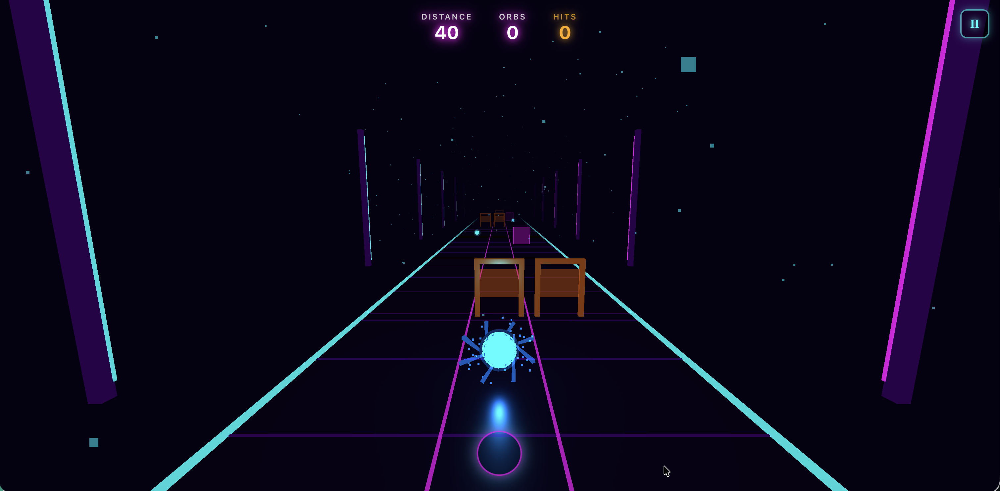

Screens



Product Goal
Test whether a skill-based rhythm runner could support a satisfying progression loop with stage mastery, replayable modes, and a cosmetic economy.
My Role
- Built the runner loop, stage structure, and progression rules
- Defined Stage Mode pacing, star gating, boosters, and earn-spend logic
- Implemented the prototype, UI flow, and persistence needed to validate the loop
Problem / Opportunity
Rhythm runners can feel exciting in the first few minutes, but they need more than raw moment-to- moment feel to keep players engaged. The opportunity was to test whether structured progression and cosmetic goals could add longer-term motivation without hurting the core gameplay rhythm.
What I Defined
- Stage Mode with 15 levels and star-based unlock progression
- Free Run mode with boosters like Magnet, Shield, and Speed Boost
- Soft-currency earn rate and cosmetic pricing for replay motivation
- Difficulty curve and note density tuning across early and mid-game stages
How I Worked with Engineering / QA
This was a solo prototype, so I handled both implementation and validation. Design decisions were translated directly into gameplay rules, stage data, UI states, and quick regression checks after each tuning pass.
Metrics or Success Criteria
- Early levels should teach the loop without a sharp frustration spike
- Stage progression should create a clear mastery path before unlocks
- Cosmetics and boosters should add replay value without overwhelming the core run
- Browser performance should stay stable enough to support repeated testing
Iteration / What Changed
Early testing showed players dropped off when difficulty spiked too fast in the opening set of levels. I smoothed note density across levels 3 to 5 so the game teaches rhythm and lane-reading more gradually before the harder sections appear.
Next Improvements
- Improve mobile controls and performance profiling
- Add lightweight live challenges such as weekly goals
- Expand cosmetic rewards and test more expressive progression hooks
Play the Prototype
Try the live build to see the progression loop, rhythm gameplay, and economy decisions in context.
Play Beat Runner